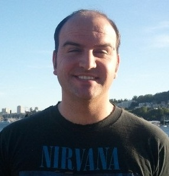

Dr. Ying Li is the Founder and Chief Data Scientist for EV Analysis Corporation, a consulting startup focused on big data, data mining, machine learning, and advanced algorithms. Dr. Ying Li is the Chief Data Scientist for Parllay, a start up in Kirkland, WA, building unified social intelligence and audience management platform, where she helps drive the research and development of the data mining and machine learning algorithms behind Parllay’s social intelligent engines. Dr. Ying Li served as Chief Scientist for Concurix Corporation where she has helped developing and implementing methodologies for analyzing computer system and application trace data for the purpose of optimizing the performance of operating system and application programs utilizing the multi-core computer architecture. Prior to Concurix, Dr. Ying Li worked at Microsoft for over 14 years in a variety of roles including Data Scientist for SQL Azure, General Manager for Advertising Division, Privacy Officer for Online Service Division, General Manger for adCenter Labs, Data Mining Manager for Internet Tracking. While at Microsoft, Dr. Li had established the data mining services to MSN businesses worldwide, and was a key founding member of Microsoft’s adCenter business, had built adCenter Labs with close partnership with Microsoft Research, producing multiple mission critical algorithmic engines and solutions. The intelligent engines utilized large user bases, rich business intelligence assets, and advanced data and text mining technologies. Her leadership on Audience Intelligence has resulted in technologies and targeting products based on understanding of user, advertisement, and content, and serving as part of the foundation for the ad platform and the online services. Prior to Microsoft, Dr. Li was a Technical Director at Computer Research Institute of Montreal, Canada, leading large research projects in the areas of knowledge modelling and management, image data base, map and document understanding, and real time natural scene object recognition systems.
Ying holds B.S. and M.S. degrees in Mathematics from Peking University, Beijing China, and a Ph.D. degree in Computer Science from University of British Columbia, Canada.
Bhaumik has over seven years of experience in data science at Microsoft. He helped improve relevance of targeted advertising, through experimentation with various user intent signals. He also led a data science team focused on ad product recommendation and consumer ad experience measurement. As part of Windows Store team, he helped reduce app certification cost while maintaining quality of the app catalog.
Recently, he has been working on cloud infrastructure and operations related analytics.
Qiaolin has worked in online advertising, search, user targeting and big data industry for about 10 years. She is currently a senior program manager working on Satori Graph & Platform at Microsoft. Qiaolin has co-founded the Seattle ACM SIGKDD chapter and serve as the treasurer for this non-profit organization since March, 2014. Qiaolin holds M.S. and B.S. degrees in Computer Science and you can learn more about her here.

Math, data mining and science have been a passion for Kenny, since he can recall. He has over six years of technology industry experience (Microsoft and more recently Amazon), and many more years within the medical industry. He enjoys working on mathematical and computational programming based problems, as well as topics into computer vision and machine learning.